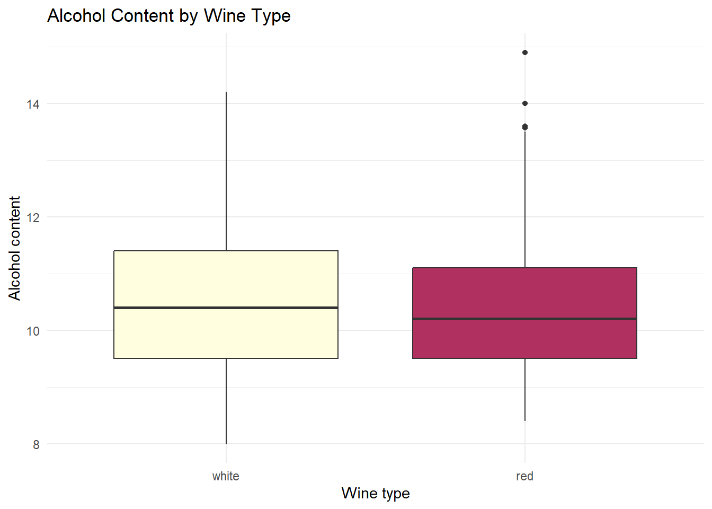

In this assignment, I selected a dataset from the UCI Machine Learning Repository that contains information about the chemical attributes of wine. The dataset contains 11 features and provides a useful opportunity to practice working with numerical data, feature selection, and classification or regression analysis.
My plan for this assignment is to load the data into R and create a label for the different wine types to use in a later classification task.
I will also perform some simple exploratory data analysis (EDA) on the datasets.
Cortez, P., Cerdeira, A., Almeida, F., Matos, T., & Reis, J. (2009). Wine Quality [Dataset]. UCI Machine Learning Repository. https://doi.org/10.24432/C56S3T.
Research Question
Can the chemical attributes of a wine be used to classify it as red or white?
Codebase
First, we need to import the library and datasets:
Code
# Getting the tidyverse packagelibrary("tidyverse")
── Attaching core tidyverse packages ──────────────────────── tidyverse 2.0.0 ──
✔ dplyr 1.1.4 ✔ readr 2.1.5
✔ forcats 1.0.0 ✔ stringr 1.5.1
✔ ggplot2 3.5.1 ✔ tibble 3.2.1
✔ lubridate 1.9.3 ✔ tidyr 1.3.1
✔ purrr 1.0.2
── Conflicts ────────────────────────────────────────── tidyverse_conflicts() ──
✖ dplyr::filter() masks stats::filter()
✖ dplyr::lag() masks stats::lag()
ℹ Use the conflicted package (<http://conflicted.r-lib.org/>) to force all conflicts to become errors
Code
# Importing the data: the dataset uses semicolons as delimiters, so I specify that in the read function.red_wines<-read.csv("winequality-red.csv", sep=",")white_wines<-read.csv("winequality-white.csv" , sep=",")
fixed.acidity volatile.acidity citric.acid residual.sugar
Min. : 3.800 Min. :0.0800 Min. :0.0000 Min. : 0.600
1st Qu.: 6.400 1st Qu.:0.2300 1st Qu.:0.2500 1st Qu.: 1.800
Median : 7.000 Median :0.2900 Median :0.3100 Median : 3.000
Mean : 7.215 Mean :0.3397 Mean :0.3186 Mean : 5.443
3rd Qu.: 7.700 3rd Qu.:0.4000 3rd Qu.:0.3900 3rd Qu.: 8.100
Max. :15.900 Max. :1.5800 Max. :1.6600 Max. :65.800
chlorides free.sulfur.dioxide total.sulfur.dioxide density
Min. :0.00900 Min. : 1.00 Min. : 6.0 Min. :0.9871
1st Qu.:0.03800 1st Qu.: 17.00 1st Qu.: 77.0 1st Qu.:0.9923
Median :0.04700 Median : 29.00 Median :118.0 Median :0.9949
Mean :0.05603 Mean : 30.53 Mean :115.7 Mean :0.9947
3rd Qu.:0.06500 3rd Qu.: 41.00 3rd Qu.:156.0 3rd Qu.:0.9970
Max. :0.61100 Max. :289.00 Max. :440.0 Max. :1.0390
pH sulphates alcohol quality is_red
Min. :2.720 Min. :0.2200 Min. : 8.00 Min. :3.000 white:4898
1st Qu.:3.110 1st Qu.:0.4300 1st Qu.: 9.50 1st Qu.:5.000 red :1599
Median :3.210 Median :0.5100 Median :10.30 Median :6.000
Mean :3.219 Mean :0.5313 Mean :10.49 Mean :5.818
3rd Qu.:3.320 3rd Qu.:0.6000 3rd Qu.:11.30 3rd Qu.:6.000
Max. :4.010 Max. :2.0000 Max. :14.90 Max. :9.000
Code
numeric_vars <-names(wines)[sapply(wines, is.numeric)]par(mfrow =c(5, 3), mar =c(3, 3, 2,1))# Iterate through the list and plot the variables.for (variable in numeric_vars) {hist( wines[[variable]],main = variable,xlab ="",col ="skyblue",border ="white" )}
# A tibble: 2 × 4
is_red number_of_wines average_alcohol average_quality
<fct> <int> <dbl> <dbl>
1 white 4898 10.5 5.88
2 red 1599 10.4 5.64
Code
ggplot(wines, aes(x = is_red, y = alcohol, fill = is_red)) +geom_boxplot() +scale_fill_manual(values =c('white'='lightyellow', 'red'='maroon')) +labs(title ="Alcohol Content by Wine Type",x ="Wine type",y ="Alcohol content" ) +theme_minimal() +theme(legend.position ="none")

Thoughts
The dataset has no missing values and contains 11 numerical variables for each wine. I added a new variable to indicate whether the wine is red or white. Later, I plan to build a classification model that predicts whether a wine is red or white based on its features. It is important to note that the dataset has a class imbalance between red and white wines, which I will need to account for. Many of the variables do not follow a normal distribution and would have to be normalized if we would like to do some sort of linear regression modeling.
AI Use
OpenAI Codex was used as an AI-assisted development tool for code development, debugging, and refinement. Its suggestions and generated code were reviewed, tested, and revised by the author as needed. The author remains responsible for the submitted analysis, code, and conclusions.
Tool/model: OpenAI Codex / GPT-5.6 Terra Developer: OpenAI Date accessed: September 1, 2026